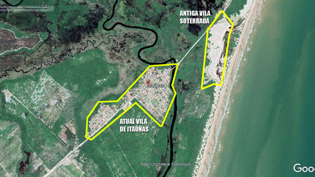

Localização
Itaúnas se localiza a 260 quilômetros de Vitória, ao norte do Espírito Santo.
O acesso se dá pela BR-101 ao norte, partindo de Vitória, de onde seguem ônibus diários e regulares para
Conceição da Barra, cidade mais próxima, ou São Mateus, cidade localizada a 55 km de distância.
De Conceição da Barra e São Mateus partem ônibus regulares para Itaúnas.
